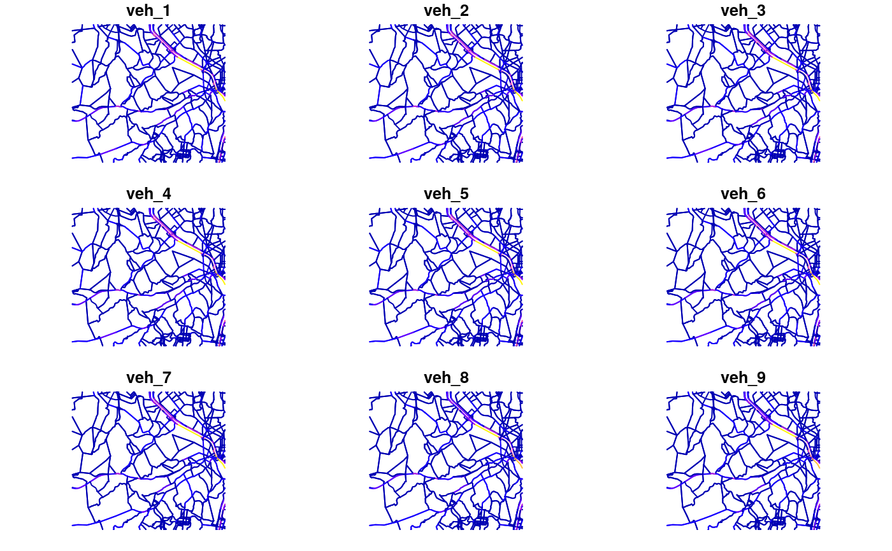

age.Rdage_ldv returns amount of vehicles at each age
age(x, type = "weibull", a = 14.46, b = 4.79, name = "veh", agemin = 1, agemax = 50, k = 1, net, verbose = FALSE, namerows)
| x | Numeric; numerical vector of vehicles with length equal to lines features of road network |
|---|---|
| type | Character; any of "gompertz", "double_logistic", "weibull" and "weibull2" |
| a | Numeric; parameter of survival equation |
| b | Numeric; parameter of survival equation |
| name | Character; of vehicle assigned to columns of dataframe |
| agemin | Integer; age of newest vehicles for that category |
| agemax | Integer; age of oldest vehicles for that category |
| k | Numeric; multiplication factor. If its length is > 1, it must match the length of x |
| net | SpatialLinesDataFrame or Spatial Feature of "LINESTRING" |
| verbose | Logical; message with average age and total numer of vehicles |
| namerows | Any vector to be change row.names. For instance, name of regions or streets. |
dataframe of age distrubution of vehicles
gompertz: 1 - exp(-exp(a + b*time)), defaults PC: b = -0.137, a = 1.798, LCV: b = -0.141, a = 1.618 MCT (2006). de Gases de Efeito Estufa-Emissoes de Gases de Efeito Estufa por Fontes Moveis, no Setor Energético. Ministerio da Ciencia e Tecnologia. This curve is also used by Guo and Wang (2012, 2015) in the form: V*exp(alpha*exp(beta*E)) where V is the saturation car ownership level and E GDP per capita Huo, H., & Wang, M. (2012). Modeling future vehicle sales and stock in China. Energy Policy, 43, 17–29. doi:10.1016/j.enpol.2011.09.063 Huo, Hong, et al. "Vehicular air pollutant emissions in China: evaluation of past control policies and future perspectives." Mitigation and Adaptation Strategies for Global Change 20.5 (2015): 719-733.
double_logistic: 1/(1 + exp(a*(time + b))) + 1/(1 + exp(a*(time - b))), defaults PC: b = 21, a = 0.19, LCV: b = 15.3, a = 0.17, HGV: b = 17, a = 0.1, BUS: b = 19.1, a = 0.16 MCT (2006). de Gases de Efeito Estufa-Emissoes de Gases de Efeito Estufa por Fontes Moveis, no Setor Energético. Ministerio da Ciencia e Tecnologia.
weibull: exp(-(time/a)^b), defaults PC: b = 4.79, a = 14.46, Taxi: b = +inf, a = 5, Government and business: b = 5.33, a = 13.11 Non-operating vehicles: b = 5.08, a = 11.53 Bus: b = +inf, a = 9, non-transit bus: b = +inf, a = 5.5 Heavy HGV: b = 5.58, a = 12.8, Medium HGV: b = 5.58, a = 10.09, Light HGV: b = 5.58, a = 8.02 Hao, H., Wang, H., Ouyang, M., & Cheng, F. (2011). Vehicle survival patterns in China. Science China Technological Sciences, 54(3), 625-629.
weibull2: exp(-((time + a)/b)^b ), defaults b = 11, a = 26 Zachariadis, T., Samaras, Z., Zierock, K. H. (1995). Dynamic modeling of vehicle populations: an engineering approach for emissions calculations. Technological Forecasting and Social Change, 50(2), 135-149. Cited by Huo and Wang (2012)
{ data(net) PC_E25_1400 <- age(x = net$ldv) plot(PC_E25_1400) PC_E25_1400 <- age(x = net$ldv, net = net) plot(PC_E25_1400) }#> #> Average = 7.27#> Warning: plotting the first 9 out of 50 attributes; use max.plot = 50 to plot all